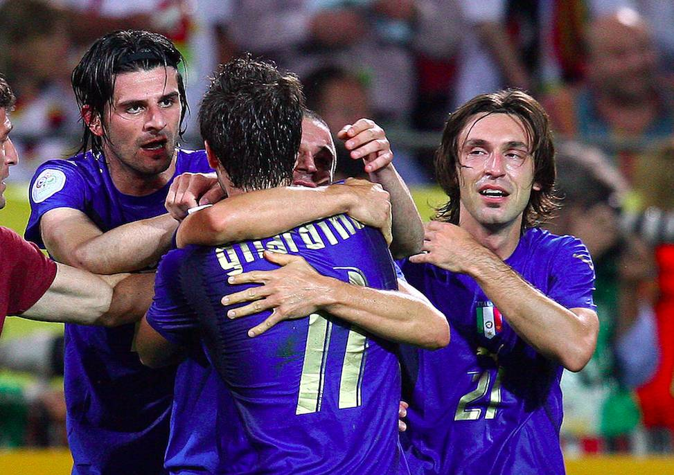
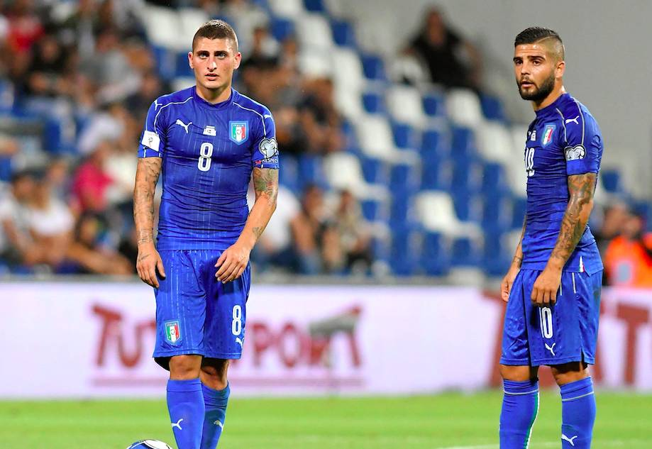

D'un point de vue comptable, l'Italie n'a pas à rougir de son bilan. Sept victoires, deux nuls, une défaite. 21 buts marqués, 8 encaissés, +13. 23 points sur 30. C'est mieux que la Serbie et l'Islande, qui terminent premières de leur poule respectivement avec 21 et 22 points. Et que toute l'Europe encense et applaudit. Et c'est, a priori, aussi bien que les Bleus, qui s'envoleront pour la Russie avec 23 points s'ils s'imposent ce lundi soir face à la Biélorussie. Comparé à ses précédentes campagnes de qualification, c'est également loin d'être honteux. En 2014, l'Italie s'était qualifiée pour le Brésil en terminant première de son groupe avec 22 points (six victoires, quatre nuls, et pas de gros poisson dans la poule). Et c'est encore plus cocasse de voir qu'en 2006, année où les Azzurri ont été sacrés champions du monde à Berlin, la Nazionale s'était qualifiée avec... 23 points (sept victoires, deux nuls, une défaite, 17 buts marqués, 8 encaissés, +9, soit un peu moins bien que cette année). Mais alors, pourquoi tout le monde, presse italienne comprise, prend-il un malin plaisir à s'acharner sur les Italiens et sur leur sélectionneur, Giampiero Ventura ?
Plusieurs aspects sont pointés du doigt. Parfois à raison, parfois non. D'abord, et c'est le thème principal de l'édito du journaliste Ivan Zazzaroni ce mardi, l'Italie serait devenue « une équipe de province » . Ah. Une équipe composée de joueurs moyens qui, prétendument, se contente de gagner petit, de ne s'imposer « que » 1-0 en Albanie, par exemple. Effectivement, de tous temps, l'Italie a été reconnue pour son jeu chatoyant fait de toque et de football total. D'ailleurs, personne n'a jamais parlé de « victoire à l'italienne » pour une victoire 1-0 toute dégueulasse. Zazzaroni – et la plupart de ses confrères – semble avoir la mémoire courte. En 2006, l'Italie s'était qualifiée dans le sprint final en battant tour à tour 1-0 la Slovénie (sur un but de Zaccardo à la 78e minute), puis la redoutable Moldavie, 2-1 avec un but vainqueur de Gilardino à la 85e. Et, à l'époque, déjà, on tirait à boulets rouges sur l'équipe de Marcello Lippi, lui reprochant son manque de talent et de cohésion (!). On parle là d'une équipe dans laquelle évoluaient, entre autres, Andrea Pirlo, Alessandro Del Piero, Francesco Totti, Alessandro Nesta, Fabio Cannavaro et Luca Toni.
Alors, certes, si l'on compare au groupe que Ventura a aujourd'hui à sa disposition, il n'y a effectivement pas photo. La dernière véritable star de l'équipe se nomme Gigi Buffon, et il a 39 ans. Les autres joueurs, aussi bons soient-ils dans leur club respectif (Insigne à Naples, Immobile à la Lazio...) n'ont actuellement pas l'étoffe des fuoriclasse d'antan. Quand, il y a une dizaine d'années, la Nazionale pouvait s'en remettre à la magie de Pirlo (ou, avant, de Baggio) pour débloquer un match, aujourd'hui, elle doit compter sur un débordement de Spinazzola ou sur une accélération d'Eder. Qui, entre parenthèses, ont tous les deux joué plus de minutes cette saison en équipe nationale (180 pour Spinazzola, 109 pour Eder) qu'en club (177 et 78). Et c'est peut-être plus vers ce genre de problèmes qu'il faudrait se tourner, plutôt que de tout de suite parler d'équipe de province. Ventura, meilleur bilan que Conte
Autre aspect largement critiqué de l'autre côté des Alpes : le sélectionneur, Giampiero Ventura. Son premier défaut : il n'est pas Antonio Conte. L'actuel coach de Chelsea a été le moteur de la Nazionale post-Brésil. Il l'a ramassée à la petite cuillère, en a fait une équipe solide, et a mangé tout cru la Belgique (2-0 en ouverture de l'Euro), puis l'Espagne (2-0 en huitièmes), avant de s'incliner aux tirs au but face à l'Allemagne (1-1). Forcément, passer après ça est compliqué. Surtout quand, en 37 ans de carrière, votre meilleur résultat est une septième place de Serie A avec le Torino. Pourtant, et c'est bien là où tout est relatif, Ventura vante un bilan comptable bien meilleur que celui de Conte à la tête de la Nazionale. 66,6% de victoires depuis son arrivée en juillet 2016 contre 56% pour Conte de septembre 2014 à juin 2016. Ce ne sont que des chiffres, cela ne prend pas en compte la manière, mais faites-en ce que vous voulez.
On reproche également au sélectionneur de ne pas entièrement filer les clefs du camion aux jeunes. De laisser sur le terrain des sénateurs (Bonucci, Buffon, Barzagli, De Rossi) malgré un niveau très moyen (voire inquiétant pour Bonucci) depuis le début de la saison. La plèbe réclame des jeunes, réclame un renouvellement, mais a tendance à oublier deux choses. D'une, que toutes les équipes d'Italie qui ont triomphé ont d'abord échoué (échecs de 2002 et 2004 avant la victoire mondiale de 2006). De deux, que son vivier n'est ni particulièrement prospère, ni inépuisable. Et que l'histoire a eu tendance à prouver qu'il vaut mieux préserver un jeune et le laisser grandir plutôt que de le lancer tout de suite en équipe nationale et l'accabler au premier match non-référence.
Parlez-en donc à Marco Verratti qui, depuis le premier jour où il a posé les pieds en équipe nationale, a été jugé selon un coefficient de « pirlosité » . « Moins bon que Pirlo » , « n'oriente pas le jeu comme Pirlo » . Certes. Rappelons juste qu'à l'âge de Verratti (24 ans), Pirlo comptait cinq sélections en équipe d'Italie et n'avait participé à aucune grande compétition. Verratti en est à 23. Laissons-lui le temps, à lui et aux autres, de se laisser pousser la barbe et de devenir les patrons de l’équipe d’Italie qui ira en Russie. Car sans être l'Italie la plus brillante et la plus talentueuse de l'histoire, oui, elle ira en Russie. Et ce sera déjà un sacré exploit, pour une équipe de province.